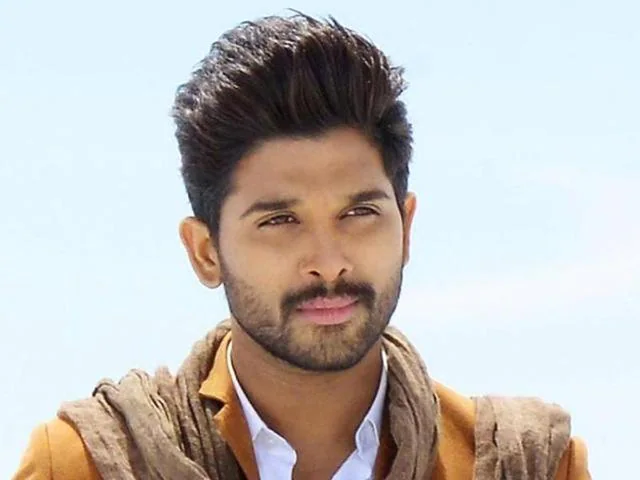
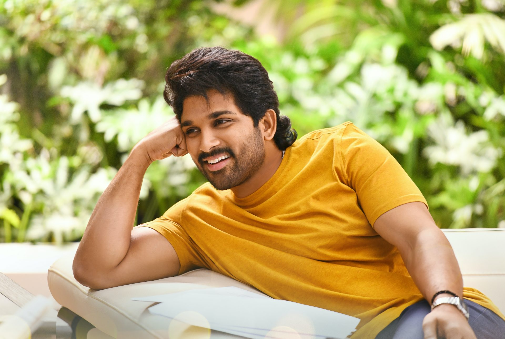
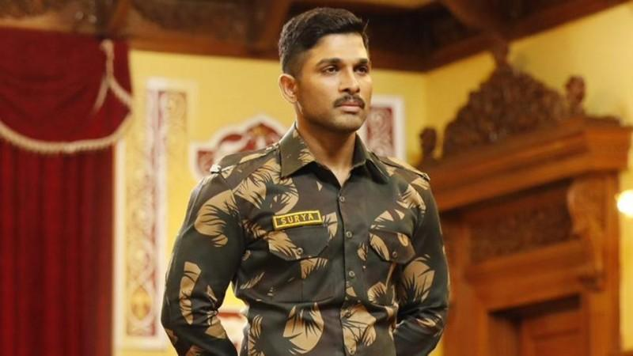
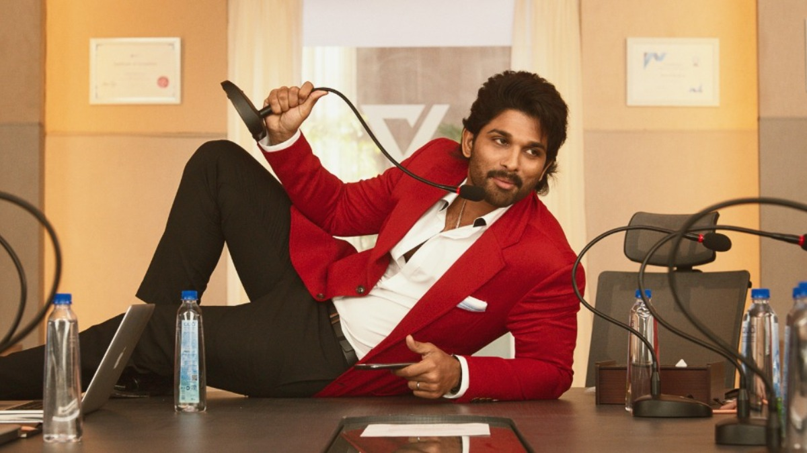
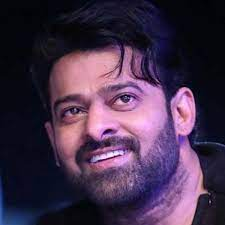
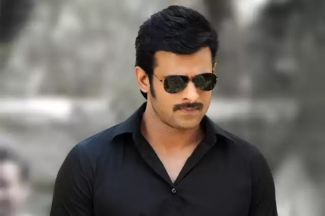
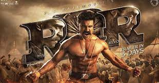
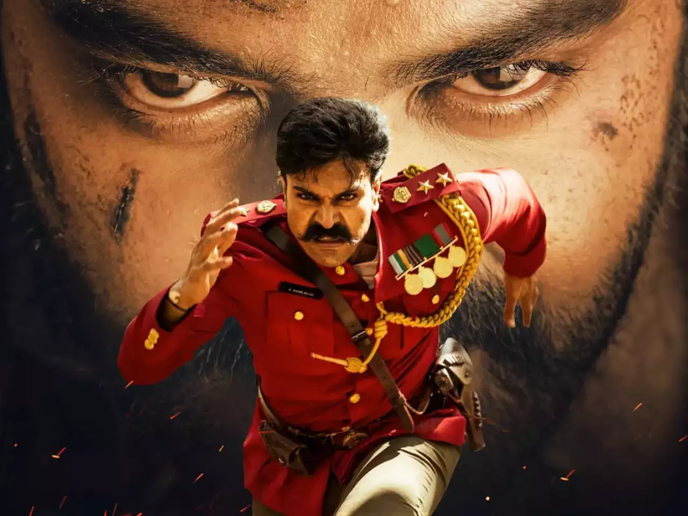
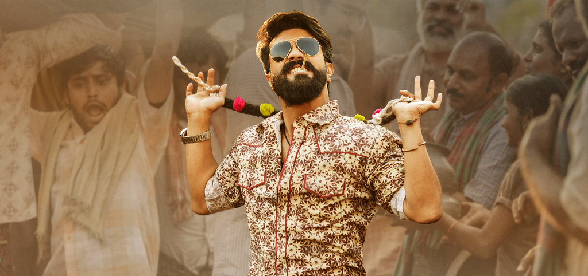

Icon Star Allu Arjun
|  |
Allu Arjun is an Indian actor who predominantly works in the Telugu film industry. Born in a family associated with the South Indian cinema, his uncle is none other than the popular actor Chiranjeevi, one of the most successful actors of Telugu cinema. Allu Arjun first appeared in movies as a child artist and then went on to star in several popular movies such as Paragu (2008), Vedam (2010), and Race Gurram(2014).
|
|
|
By 2014, Arjun had already acquired the tag of `stylish actor` and he proved it again by giving a fitting performance in a cameo role even. His cameo role in the movie Yevadu, directed by, Vamsi Paidipally, was highly praised with The Hindu quoting: Allu Arjun shows what an actor can do even in a short role, in the few minutes he packs his experience, internalizes the character and makes an impressive exit even as he loses his identity. In the same year, he starred in the movie Race Gurram, an action comedy directed by Surender Reddy, and grabbed his third Filmfare award as Best Actor. Apart from essaying commercially viable roles, Allu Arjun also appeared in a short film I Am That Change (2014), which he produced as well. The movie essentially spread awareness on individual social responsibility.
|
||
|  |  |  |
Rebel Star Prabhas(Darling)
|  |
Prabhas was born in Chennai, Tamil Nadu, India, on 23th October 1979. His original name is Venkata Satyanarayana PrabhasRaju Uppalapati.He's an Indian actor who primarily works in Telugu cinema. His films like Varsham, Chatrapathi, Bujjigadu and Baahubali are well known.
|
|
|
He appeared in a few moderate hit films including Mr Perfect, Rebel & Mirchi among others from 2008 to 2014. He appeared in 2015 Epic Baahubali of S.S. Rajamouli: The Beginning. This film has accumulated worldwide commercial and critical recognition.
Shortly after the first part, its sequel became the most anticipated film. The sequel was released in March 2017. The film was screened on 900 screens and shows were booked beforehand for the first week.
The film is sort like a prequel than a continuation, and Prabhas acted in this film by keeping all his efforts. He was then seen in Saaho bilingual suspense movie alongwith Shraddha Kapoor. This film will mark his film debut in Bollywood.
He has overcome Rajinikanth and Kamal Haasan’s likes and got a statue as Amarendra Baahubali, based on his Baahubali role and also like wearing the armour of the war. In the past, Prabhas stated he never thought of being an actor, and just wanted to be a hotelier in fact.
Awards & Honours:
In 2005 - Santosham Film Award for Varsham Movie |
||
|  |  |
|
* Mega Power Star Ram Charan *
|
Ram Charan is an Indian actor, producer and an entrepreneur who predominantly works in the Telugu film industry. Ram Charan who made his acting debut with Chirutha in 2007 has been part of several highly acclaimed movies like The Fighter, Magadheera, Racha, and Naayak. Apart from being an actor, Ram Charan also turned producer for his father, Chiranjeevi`s 150th film and produced the film under his own production house named Konidela Production Company. The actor is a partner in TruJet airlines as well as owns a Polo team, which is called Ram Charan Hyderabad Polo Riding Club.
|
||
|
Ram Charan made his Bollywood debut with the much hyped Zanjeer, which was the remake of the 1973 movie of the same name starring Amitabh Bachchan. The movie also starring Priyanka Chopra in the lead role did not perform well at the box-office and got negative reviews. The movie was later remade in Telugu as Thoofan, which also failed miserably at the box-office. The actor more than made up for his consecutive failures with his 2014 movie, Yevadu directed by Vamshi Paidipally. The movie co-starring Shruti Haasan, Amy Jackson, Allu Arjun and Kajal Aggarwal got mixed reviews but was a huge commercial hit. His other release in the same year, Govindudu Andarivadele opened to mostly positive reviews and grossed more than 40 crores INR. Ram Charan`s only release of 2015 was Sreenu Vaitla`s Bruce Lee - The Fighter. The movie also featuring Rakul Preet Singh, Kirti Kharbanda, and Arun Vijay got mixed to negative reviews and was an average earner. His 2016 releases include Dhruva directed by Surender Reddy. His other projects include Rangasthalam (2018), Vinaya Vidheya Rama (2019) and Syeraa Narasimha Reddy (2019). His other works are Vinaya Vidheya Rama (2019), Acharya (2020), the mega blockbuster RRR and RC-15 (2023). |
||
|  |  |  |